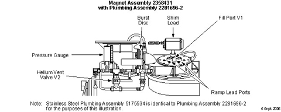
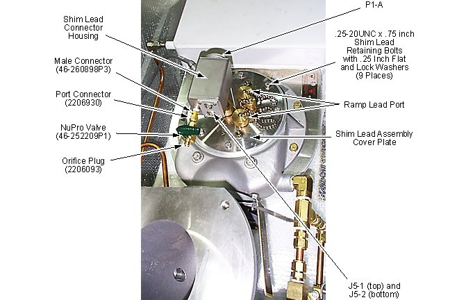
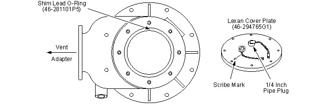
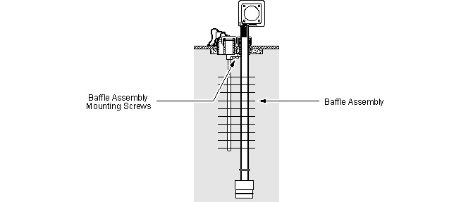
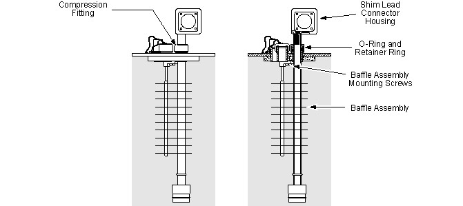

Operating Documentation
Direction 5500113, Rev# 3
Discovery MR450 1.5T Service Methods
Module Version 2.0, Version Date 2/8/10
Operating Documentation |
| Required Persons | Preliminary Reqs | Procedure | Finalization |
|---|---|---|---|
| 2 | Included in 'Procedure' | 1 hour | Included in 'Procedure' |
The Shim Lead Assembly is designed with a replaceable Baffle Assembly. Following a quench, the Shim Lead Assembly will have to be removed in order to replace the Baffle Assembly. The Shim Lead Assembly itself should only need replacing if it is determined that a fault exists.
| Item | Qty | Effectivity | Part# | Manufacturer | |
|---|---|---|---|---|---|
| 3.0T Warning Sign & Label Kit | 1 | - | 2379494 | - | |
| Portable Oxygen Monitor | 1 | - | 2287000 | - | |
| Cryogen Safety Wear Kit; one kit per person | 1 | - | 46-271137G1 | - | |
| Nonabsorbent protective clothing (long-sleeve shirt and pants); one set per person | 1 | - | - | - | |
| Nonferrous Safety Shoes; one pair per person | 1 | - | - | - | |
| Brass Master Padlock with Brass Shackle | 1 | - | 46-194427P320 | - | |
| Brass Master Transition Padlock | 1 | - | 2387081 | - | |
| Black & White on Red Lockout Tag, package of 25 | 1 | - | 46-194427P322 | - | |
| Transition LOTO Tag | 1 | - | 46-194427P313 | - | |
| Line Cord Plug Cover, Plugs ≤ 3 in. (76 mm) wide x ≤ 5.875 in. (149 mm) long, Cords ≤ 1.25 in. (31 mm) dia. | 1 | - | 46-194427P321 | - | |
| Digital Voltmeter (DVM), Volt-Ohm Meter (VOM) or non-contact voltage tester | 1 | - | - | - | |
| Sav-Con and Instrumentation Lead Installation/Removal Kit | 1 | - | 46-294872G2 | - | |
| Helium Regulator and Hose Kit | 1 | - | 46-306734G1 | - | |
| Nonmagnetic Gas Cylinder Cart | 1 | - | 46-306717G1 | - | |
| Nonmagnetic Helium Cylinder Cart | 1 | - | 46-258150P1 | - | |
| Flexible Helium Hose, 40 foot (12.2 M) | 1 | - | 46-271135P1 | - | |
| Portable Leak Detector (optional) | 1 | - | 2270571 | - | |
| Titanium Tool Kit, Basic Set 5113258, Titanium Tool Kit, Installation Set 5112581 or other non-ferromagnetic tools (magnets with magnetic fields > 1.5T); one kit | 1 | - | 5113258 or 5112581 | - | |
| Flashlight | 1 | - | - | - | |
| HDx Service Platform (can use Universal Service Ladder/Platform 2319156 if service space ≥ 30 inches (762 mm)) | 1 | - | 5155291 (or 2319156) | - | |
| Service Methods documentation for the magnet/enclosures (available through the Common Document Library at gehealthcare.com or through your local GE Healthcare Service Representative) | 1 | - | - | - | |
| Item | Qty | Effectivity | Part# | Manufacturer |
|---|---|---|---|---|
| Gaseous Helium, 235 SCF Nonmagnetic Cylinder | 1 | - | - | - |
| Leak detection fluid (e.g., Snoop, Bird Dog Quart Spray (p/n DOG-1Q), Big Blue (p/n Rt100S or Rt100G) or Leak-Tec) | 1 | - | - | - |
| Anti-Seize Lubricant: Permatex, 1 oz. tube, 2119594, OR Bostik, 4 oz. can, 46-294151P8 | 1 | - | 2119594 or 46-294151P8 | - |
| Vacuum Grease | 1 | - | 46-252065P24 | - |
| Teflon Tape; roll | 1 | - | - | - |
| Item | Qty | Effectivity | Part# | Manufacturer | |
|---|---|---|---|---|---|
| Shim Lead Connector Housing Assembly 2180821 (included in Retractable Shim Lead Assembly 2173354) OR Reduced Height Shim Lead Connector Housing Assembly 2283170 (included in Retractable Shim Lead Assembly, Short, 2285073) | 1 | - | 2180821 or 2283170 | - | |
| Baffle Assembly (included in Shim Lead Assemblies 2173354 and 2285073) | 1 | - | 2180818 | - | |
| Teflon Shim Lead O-Ring (included in Field Spares Kit 5265652) | 1 | - | 46-281101P5 | - | |
| ||||
| Potential Fatal Injury! | ||||
| Make sure to review and fully understand all superconducting magnet portions of 2301164PRE, MR Magnet ― Safety Requirements before starting the Shim Lead and Baffle Replacement procedure. |
| ||||
| Potential Fatal Injury! | ||||
| Make sure to fully comply with all required items for the Shim Lead and Baffle Replacement procedure in the 'Magnet & Cryogen Service Safety Requirements' subsection of 2301164PRE, MR Magnet ― Safety Requirements before and while performing the Shim Lead and Baffle Replacement procedure. |
| ||||
| Potential Fatal Injury! | ||||
| Have all “Work Assistants” or “Work Observers” comply with the 'Buddy System Requirements & Certification' subsection of 2301164PRE, MR Magnet ― Safety Requirements before starting the Shim Lead and Baffle Replacement procedure. |
| ||||
| Asphyxiation & Cold Burn Hazard! | ||||
| A magnet quench during procedure could result in rapid expulsion of liquid helium through the Vertical Penetration. | ||||
| Make sure magnet is ramped down to zero field before starting the Shim Lead and Baffle Replacement procedure. |
| ||||
| Asphyxiation Hazard! | ||||
| Procedure generates odorless, colorless helium gas that displaces oxygen in the air. | ||||
| Make sure magnet room vent exhaust fan is on before starting the Shim Lead and Baffle Replacement procedure. |
| ||||
| Potential Cold Burn or Asphyxiation Hazard | ||||
| Internal cryostat pressure build-up to > 5.25 psig will open 5.25 psig relief valve. | ||||
Before removing either Ramp or Fill Port Caps or loosening
any component resulting in the release of cryogen pressure:
|
| ||||
| Potential Cold Burn Hazard | ||||
| Exposure to Cryogens and contact with cold objects is possible during Shim Lead and Baffle Replacement. | ||||
| Wear protective clothing, nonabsorbent gloves and goggles when performing the Shim Lead and Baffle Replacement procedure. |
| ||||
| Electrical Shock Hazard | ||||
| Contact with connectors leading to an energized Compressor can cause electrical shock. | ||||
| Whenever the input power to the Compressor is disconnected, follow lockout/tagout procedures to make sure power is not supplied to the Compressor. See OSHA Lockout-Tagout. |
| NOTE: | If the site has Magnet Monitor proprietary software, connect to Magnet Monitor and turn off the alarm for vessel pressure. Then turn the vessel pressure control to a high value of .5 psig and a low value of .4 psig. |
| Condition | Reference | Effectivity |
|---|---|---|
Make sure the area is secure and that ALL required Warning Signs are posted to meet the safety requirements stated in 2301164PRE, MR Magnet ― Safety Requirements before starting the Shim Lead and Baffle Replacement procedure. | - | |
The removal of some magnet enclosure components may be required to complete the Shim Lead and Baffle Replacement procedure. Refer to Upper and Side Enclosure Removal (Wide Open enclosures) or to Introduction to HDe & HDx Enclosuresand the appropriate Service Methods documentation (available through the Common Document Library at gehealthcare.com or through you local GE Healthcare Service Representative) before continuing with the Shim Lead and Baffle Replacement procedure if cover removal is required. | - | |
(continued) | - | |
The magnet must be at zero field in conformance with Magnet Rampdown to Zero Field before starting the Shim Lead and Baffle Replacement procedure. | - | |
Make sure the magnet room exhaust fan is on and operational before starting the Shim Lead and Baffle Replacement procedure. | - | - |
Make sure the magnet room door is propped open before starting the Shim Lead and Baffle Replacement procedure. | - | - |
| ||||
| Make sure the Vertical Penetration is clear of any obstructions before inserting/extracting any tools/apparatus to prevent possible magnet damage. | ||||
Make sure the Shim Lead Assembly is “Engaged" in conformance with Shim Lead Engagement and Disengagement.
Ramp the magnet down to zero field in conformance with Magnet Rampdown to Zero Field.
Shut down the compressor as follows:
Turn 'ON' (upwards) the Coldhead Drive Switch on the Compressor's back panel. See Illustration 1.
Illustration 1: Views of CSW-71D Compressor

Place the Drive Switch on the Compressor's front panel in the 'O' (off) position. See Illustration 1.
Run the Coldhead for 10 seconds (only) with the Compressor turned off to prevent pressure build-up in the Coldhead, then turn 'OFF' the Coldhead Drive Switch and the Compressor's Main Power Switch. See Illustration 1.
| ||||
| Electrical Shock Hazard | ||||
| Contact with connectors leading to an energized Compressor can cause electrical shock. | ||||
| Whenever the input power to the Compressor is disconnected, follow lockout/tagout procedures to make sure power is not supplied to the Compressor. |
Disconnect and lockout/tagout input power to the Compressor. Verify that no voltage is present by using a DVM or equivalent measuring device.
Slowly open Vent Valve V2 and vent the magnet until internal pressure is 0.2 psig on the Cryostat Pressure Gauge. Close V2. See Illustration 2.
Illustration 2: Helium Vent Plumbing

Disconnect Connectors J1-A from P1-A and P5 from J5 on the Shim Lead Connector Housing. See Illustration 3.
Illustration 3: Shim Lead Assembly Orientation

Disengage the Shim Lead Assembly in conformance with Shim Lead Engagement and Disengagement.
| ||||
| Perform the following two steps rapidly to prevent cryopumping of air into the Vertical Penetration. Make sure the Lexan Cover Plate (46-294765G1) is on the Service Ladder/Platform before removing the Shim Lead Assembly. | ||||
Loosen and remove the eight .25-20UNC retaining bolts along with the eight 0.25 in. nominal flatwashers, and then remove the Shim Lead Assembly. See Illustration 3.
| ||||
| Make sure the Shim Lead's o-ring is in its Vertical Penetration groove before covering the Vertical Penetration. | ||||
Immediately cover the Vertical Penetration with the Lexan Cover Plate (46-294765G1). Alignment of the Lexan Plate's scribe mark to the Vent Adaptor is not necessary for the Shim Lead and Baffle Replacement procedure. See Illustration 4.
Illustration 4: Shim Lead O-Ring and Lexan Cover Plate

Secure the Lexan Cover Plate onto the Vertical Penetration with the eight .25-20UNC retaining bolts and the 0.25 in. nominal flatwashers removed in Step 7.
If the Baffle Tree Assembly needs replacement, continue with Baffle Replacement, Baffle Replacement. If not, continue with Shim Lead Assembly Replacement, Shim Lead Assembly Replacement.
Replacement of the Baffle Assembly is necessary after a quench or if damaged when the Shim Lead Assembly is removed.
| ||||
| Make sure the Vertical Penetration is clear of any obstructions before inserting/extracting any tools/apparatus to prevent possible magnet damage. | ||||
Remove the Shim Lead Assembly in conformance with Shim Lead Assembly Removal, Shim Lead Assembly Removal.
Place the Shim Lead Assembly in the “Engaged" position in conformance with Shim Lead Engagement and Disengagement. This is necessary in order for the Baffle Assembly to clear the stainless steel Guide Sleeve. See Illustration 5.
Illustration 5: Baffle Assembly Replacement

Remove the 3 hex head screws that secure the Baffle Assembly to the Shim Lead Assembly.
Remove the defective Baffle Assembly and discard.
Install the Baffle Assembly (2180818) by carefully lifting up near the slit of each baffle while simultaneously pushing the Baffle Assembly onto the Shim Lead Assembly. See Illustration 5. Starting from the bottom of the Baffle Assembly and working towards the top, continue this process until the Baffle Assembly is attached to the Shim Lead Assembly G10 Tube.
| NOTE: | Make sure the Baffle Assembly circular cutouts are aligned to the circular cutouts in the Rigid Baffle before securing to the Shim Lead. |
Secure the Baffle Assembly to the Shim Lead Assembly using the three screws removed in Step 3 above.
Place the Shim Lead Assembly in the “Disengaged" position in conformance with Shim Lead Engagement and Disengagement. Tighten the compression fitting on the Shim Lead Assembly.
Reinstall the Shim Lead Assembly in conformance with Shim Lead Assembly Replacement, Shim Lead Assembly Replacement.
| ||||
| Make sure the Vertical Penetration is clear of any obstructions before inserting/extracting any tools/apparatus to prevent possible magnet damage. | ||||
Check for icing on the Sav-Con Connector by shining a flashlight through the Lexan Cover Plate.
If any icing exists, remove the ice by directing a 3 psig - 5 psig flow of warm helium gas at the affected areas. This is done by removing the 1/4 inch Pipe Plug in the Lexan Plate and inserting the Helium Gas Tube to the ice point.
If the Shim Lead is being replaced:
Remove the Male Connector from the defective Shim Lead Assembly Connector Housing.
Place two 1/4 inch Blank-Off Caps ― if not already in place ― on the open ends at the Male Connector.
Wrap teflon tape onto the male threads of the Male Connector before threading into the replacement Shim Lead Connector Housing. See Illustration 3 for the Male Connector's location.
Mount the Male Connector to the replacement Shim Lead Assembly Connector Housing (normal height housing: 2180821; reduced height housing: 2283170).
Make sure that a functional Shim Lead Assembly is on the Service Ladder/Platform and that the Shim Lead is in the retracted position.
| ||||
| Do not leave the Vertical Penetration uncovered for any significant period of time as cryopumping and icing may result. | ||||
Loosen and remove the eight .25-20UNC retaining bolts along with the eight 0.25 in. nominal flatwashers and remove the Lexan Cover Plate.
Inspect the Shim Lead O-Ring (46-281101P5) at the top of the Vertical Penetration. Replace if nicked, scratched or damaged. Use vacuum grease when installing the o-ring.
| ||||
| Make sure the Blank-Off Caps are in place and the Shim Lead is carefully inserted into the Vertical Penetration to prevent “cold shock" and possible permanent damage of the Shim Leads. | ||||
Carefully replace the Shim Lead Assembly into the Vertical Penetration. Make sure that the Shim Lead O-Ring (46-281101P6) is properly seated in the Vertical Penetration. See Illustration 3.
Align the scribe mark on the Shim Lead Assembly Cover Plate with the Vertical Penetration Exhaust Plenum. See Illustration 3.
Secure the Shim Lead Assembly to the Vertical Penetration with the .25-20UNC retaining bolts and the 0.25 in. nominal flat and lock washers removed in Step 5. Use of Permatex (1 oz. tube: 2119594) or Bostik (4 oz. can: 46-294151P8) anti-seize lubricant is recommended.
| NOTE: | The Shim Lead Connector is keyed and must be aligned with the keyway in the Sav-Con Connector in order to engage. When contact is felt between the Shim Lead and the Sav-Con Connector, the Shim Lead will depress approximately 1/4 inch (6 mm) to fully seat the connectors. |
Loosen the compression fitting and push the Shim Lead down to engage the connector. See Illustration 6.
Illustration 6: Shim Lead Assembly

Tighten the compression fitting.
Open Helium Vent Valve V2 and vent the Cryostat down to 0.2 psig. See Illustration 2.
Remove the Blank-Off Cap and reconnect the 1/4 inch Shim Lead Exhaust Plumbing to the Male Connector on the Shim Lead Connector Housing. Tighten and leak test the fitting.
Allow the Cryostat to build pressure to 1 psig, then check for leaks around the o-ring in the Vertical Penetration and at the Shim Lead compression fittings. Repair any leaks found.
Engage the Shim Lead in conformance with Shim Lead Engagement and Disengagement.
Make sure Connectors J1-A and P5 are connected to the Shim Lead Connector Housing at P1-A and J5, respectively.
Ramp the magnet in conformance with Ramping Magnet to Field.
After the magnet has been ramped and shimmed (if the Baffle Assembly was replaced) and is stable and all ramping and shimming cables are removed from the magnet, place the Shim Lead Assembly in the “Disengaged" position in conformance with Shim Lead Engagement and Disengagement.